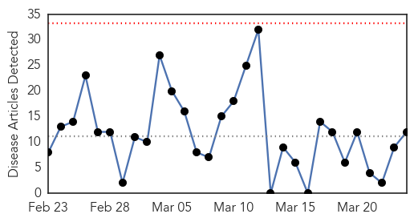
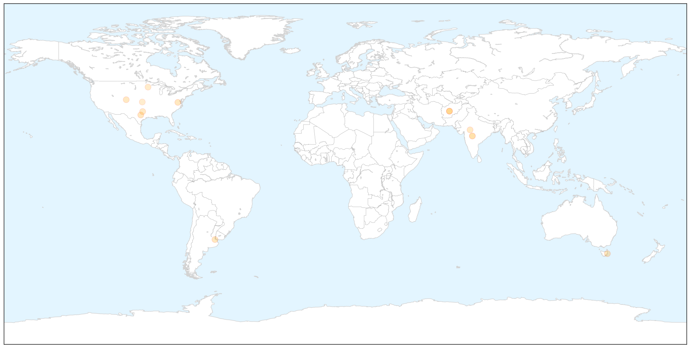
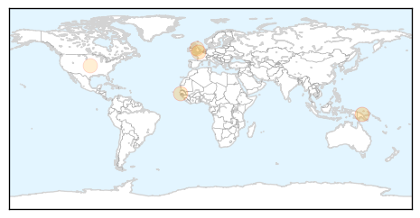

Influenza
30-Day Web Trend
0 alerts, 0 warnings

30-Day Twitter Trend
0 alerts, 0 warnings

Article Locations

X

Article Confidences

Top Articles:
- 0.989
- India flounders as H1N1 spreads
- 0.751
- March 24, 2015 Archives
- 0.751
- March 24, 2015 Archives
- 0.751
- March 23, 2015 Archives
- 0.751
- March 23, 2015 Archives
- 0.751
- March 23, 2015 Archives
- 0.751
- March 23, 2015 Archives
- 0.710
- How employers fight the flu
- 0.700
- Pandemic Influenza Therapeutic Pipeline Review H1 2015 Research Report
- 0.679
- Pentavalent vaccine not cause of Ujjain infant’s death, says lab test
- 0.620
- USDA to test avian flu vaccine; wild birds nixed as Minnesota H5N2 source
- 0.579
- Why We Don't Have A Cure For The Common Cold
Top Tweets:
-
No tweets found for Mar 24, 2015
Meningitis
30-Day Web Trend
0 alerts, 0 warnings

30-Day Twitter Trend
0 alerts, 0 warnings

Article Locations

Article Confidences

Top Articles:
- 0.804
- Multi-Drug Resistance Adds to Tuberculosis Epidemic in Papua New Guinea — Global Issues
- 0.721
- MRC reaffirms commitment to overcoming TB in Gambia
- 0.642
- Lindfield Meningitis survivor’s plea for vaccination
- 0.601
- Varied Immunity In Children Vaccinated With Serogroup B Meningococcus
- 0.506
- Blue Bell announces new ice cream recalls
Top Tweets:
-
No tweets found for Mar 24, 2015